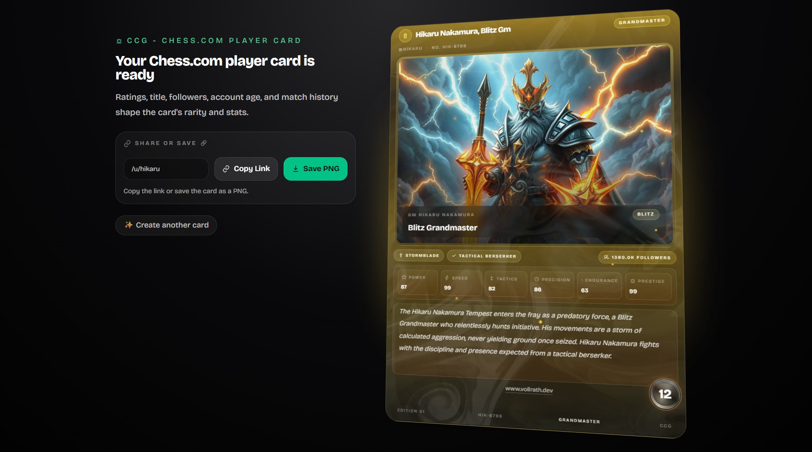

UI Design
Applicant View
Concept and UI design for a new applicant view for TalentAdore’s applicant tracking system.

UI Design
Kanban View
Concept for a Kanban board view for visually managing recruiting processes in an ATS.

UI Design
Statistics Dashboard
UI design for a statistics dashboard used to analyze recruiting data.

Side Project
Chess.com Trading Card
Web app that turns Chess.com player profiles into collectible fantasy cards, using public player data, generated lore and artwork, and an animated presentation with 3D tilt and shine effects.

TalentAdore Roll-up
Roll-up banner design for TalentAdore trade fairs and events.

Webdesign
Sushi San
Design and development of a restaurant website for a sushi restaurant in Helsinki.

3D / Motion
Animated Keycaps
Small Blender exercise to experiment with animation, materials, and textures.
Webdesign
Franka Vollrath
Older website concept for a personal portfolio site.
3D Rendering
21 Nicotine Pouches
Product design and animated 3D rendering for a nicotine pouch brand.
UI Design
Think Tank United
Hero page concept created to teach design fundamentals in an Adobe XD bootcamp.

Motion
Webinar Intro
Intro animation for TalentAdore marketing webinars.
Infographic
DRA Consulting
Visual infographic for a consulting company.

3D / Motion
Conveyor Belt Render
3D animation of a conveyor belt created as an exercise in material and animation workflows in Blender.
3D Render
Escape Room
3D renderings for an escape room in Finland.
Webdesign
Janne Heikkinen
Concept, design, and technical implementation of a website for a Finnish member of parliament.

Ad Campaign
Sofigate
Advertising campaign including photography and image editing for the consulting company Sofigate.

Exhibition Design
JucaPlus Roll-up
Trade fair roll-up banner for the company JucaPlus.

Editorial
LVR Magazine Cover
Magazine cover on the topic of media addiction for the Landschaftsverband Rheinland.

Helsinki Poster
Illustrated poster featuring all districts of Helsinki.

Merch
Hoodie
Merchandise design for TalentAdore hoodies.

Compositing
Baseball Ad
Fictional ad campaign for a sporting goods manufacturer.

Image Editing
Camper
Image editing and compositing for a caravan dealer.

Branding
Lumipallo Christmas Card
Design of a Christmas card for the Finnish travel company Lumipallo.

3D Rendering
277 Nicotine Pouches
Design and 3D rendering for a nicotine pouch product line.